產品資料中心｜給 ChatGPT
給寫文案的人：這頁是資料，不是成品廣告。用「大家都看得到／同一個行事曆」「訂一次全家用」。學校通知可用「收通知的人」。禁：「同一本」「一戶價」「你們家叫什麼」、家務輪值／集星星、質問句。品牌請下載官方 wordmark，勿自己刻字。
1. 主要使用者與困擾
誰會用
- 跟家人或朋友一起約事情、接送、班表、聚會、旅行的人
- 會收到紙本／群組通知的人（聯絡單、活動海報等）—不必預設家長／小孩角色
- 不想再靠 LINE 來回對時間的人
原本怎麼處理
- 各用各的手機行事曆，或只記在聊天室
- 通知貼冰箱／丟相簿，再一筆筆打進手機
- 用 LINE 群問「誰有空」「那天有沒有事」
哪裡麻煩
- 約好了有人沒看到 → 漏接、重複問
- 紙本多，懶得打、也容易漏
- 私人行程跟共用混在一起，不好控誰看得到
2. 功能＋實際情境
情境 A｜通知單 → 拍照 → 勾選 → 建成行程
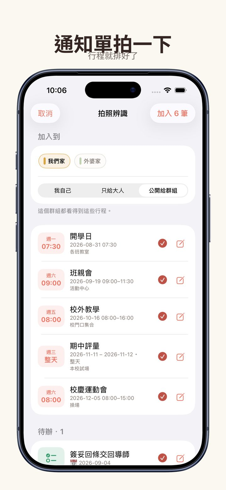
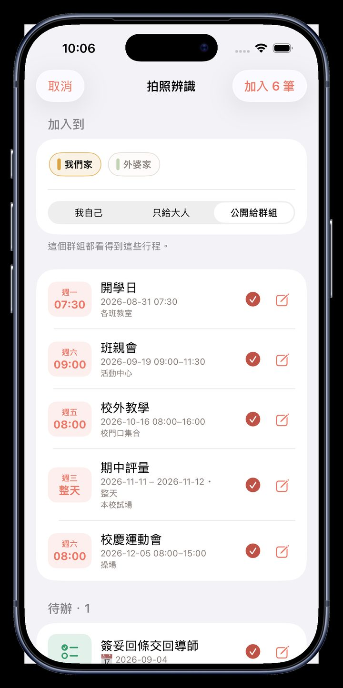
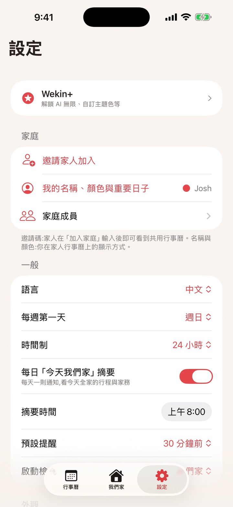
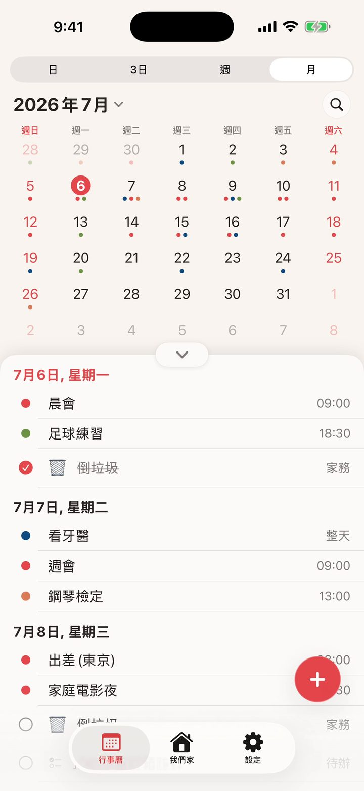
情境 B｜跟家人朋友一起看日子
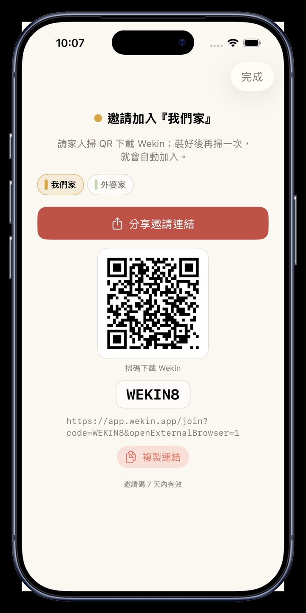
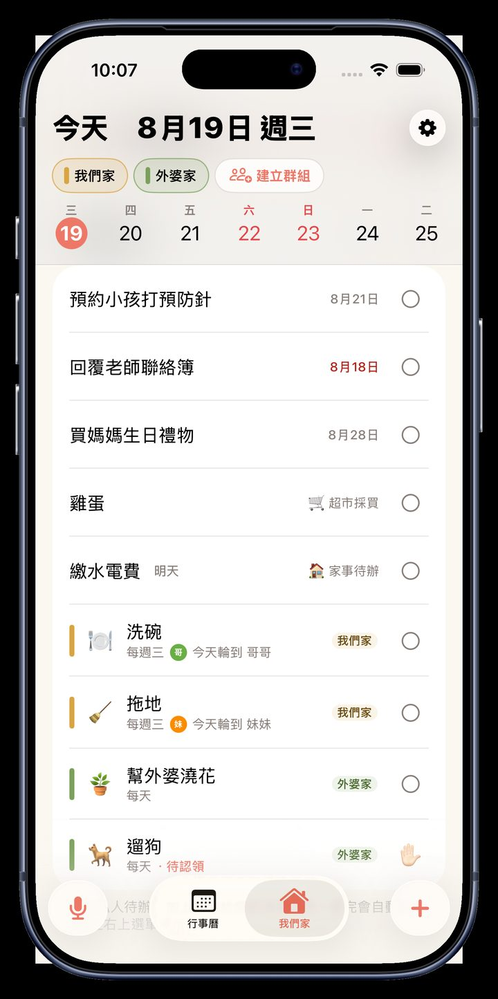
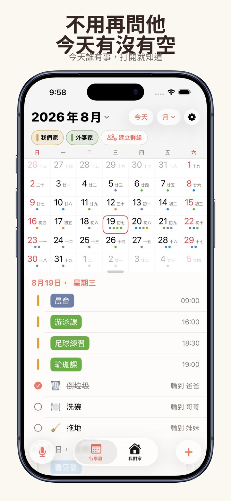
功能總表
| 能力 | 狀態 | 備註 |
|---|---|---|
| 共用行事曆、長按拖移 | 已上線 | 月／日等；整天可點起迄日 |
| 唯讀顯示既有日曆 | 已上線 | iCloud／Google／Exchange；勿寫完整搬家 |
| 假日多語；農曆僅正簡中 | 已上線 | |
| 語音加行程＋預覽 | 已上線 | 沒時間→待辦、不重複 |
| 拍照→行程 | 已上線 | 先確認再寫入 |
| 待辦／清單認領勾選 | 已上線 | |
| 公開／私人行程 | 已上線 | |
| 邀請、多群組 | 已上線 | 免費群組數有限，見付費 |
| 推播／提醒 | 已上線 | 廣告宜保守 |
| 七語介面 | 已上線 | |
| Wekin+／家庭共享 | 已上線 | 訂一次全家用 |
| 家務輪值／集星星 | 勿承諾 | 商店已拿掉；入口軟下架 |
| AI 雲端額度擋次 | 測試中 | limitsDisabled=true；付費牆未列 AI |
| Android Play | 待確認 | 有專案；未查到穩定公開頁 |
| Web | 已上線 | app.wekin.app |
3. 截圖＋短操作錄影


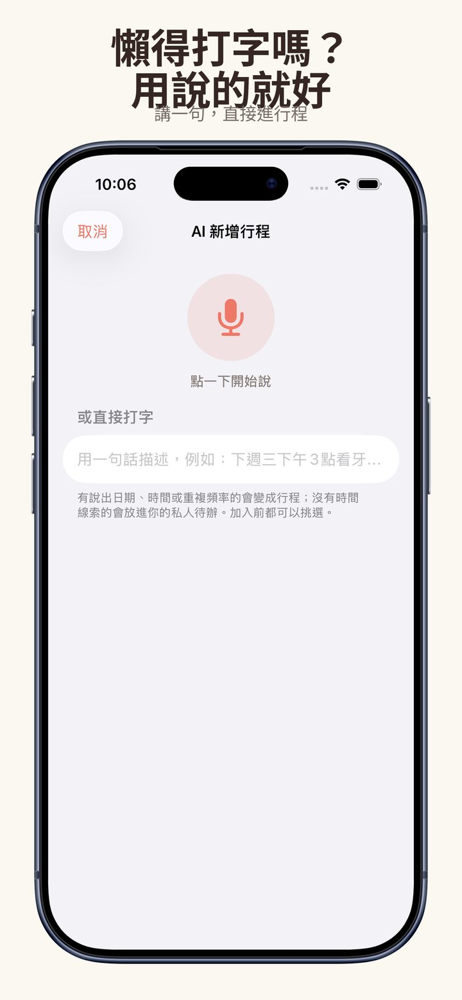
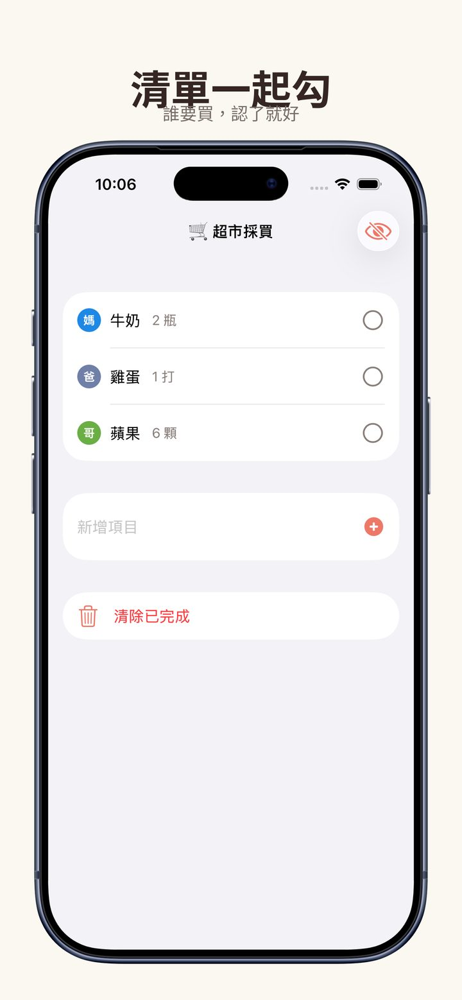
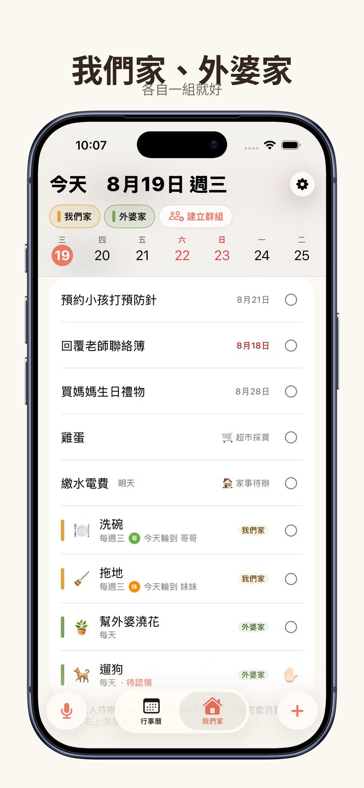
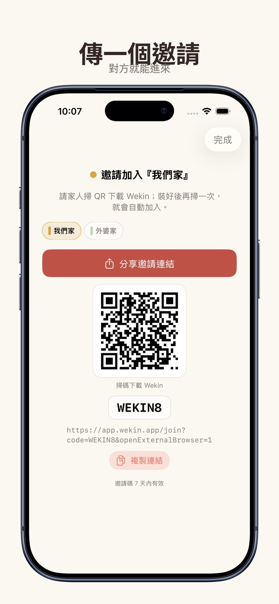
無字幕短片（優先）
4. 免費 vs 付費（Wekin+）
| 項目 | 免費 | Wekin+ |
|---|---|---|
| 每個群組的清單 | 最多 3 張 | 不限 |
| 建立群組 | 1 個 | 不限 |
| 行程／成員／主題顏色 | 基本配色 | 完整配色 |
| Apple 家庭共享 | — | 支援（訂一次全家用） |
| 價格／試用 | 現況證據 | 備註 |
|---|---|---|
| 台灣月費 | App Store 列 NT$120 | 以商店為準，可能變動 |
| 台灣年費 | App Store 列 NT$890 | 同上 |
| 試用 | IAP 設計 7 天免費（新訂閱者） | 待 Josh 確認 現況資格是否仍一律顯示 |
| AI 免費次數 | 設計：拍照／文字各有月額度；Plus 不擋 | 測試中 本機 limitsDisabled=true；廣告勿硬承諾 |
5. 相較 LINE／一般行事曆
| 痛點 | LINE／各用各的日曆 | Wekin（已上線） |
|---|---|---|
| 對時間 | 聊天室來回問 | 同一個行事曆打開就看得到 |
| 紙本通知 | 自己打或丟相簿 | 拍一下→確認→進日子 |
| 隱私 | 群組訊息大家看得到 | 私人行程可只給自己 |
| 多人付費 | — | 訂一次，家庭共享能一起用 |
6. 品牌色＋原檔下載
主色珊瑚紅 #FF6F61
深字 #2A2320 ｜ 白 #FFFFFF
Wordmark 預覽（官方透明 PNG，下載用原檔）：
Wordmark／Icon 原檔
wekin-wordmark-dark.png
wekin-wordmark-white.png
wekin-wordmark-coral.png
wekin-wordmark-pill.png
app-icon-1024.png
{kind=link}
{kind=link}
{kind=link}
{kind=link}
{kind=link}
截圖原尺寸
{kind=link}
{kind=link}
{kind=link}
{kind=link}
{kind=link}
{kind=link}
{kind=link}
{kind=link}
流程靜幀原檔
{kind=link}
{kind=link}
{kind=link}
{kind=link}
{kind=link}
{kind=link}
{kind=link}
錄影原檔
明確不要寫：
- 家務輪值、自動輪流、集星星
- 同一本、一戶價、你們家叫什麼、不用再問他有沒有空
- 系統日曆「完整雙向搬家」當主賣點（商店＝唯讀顯示）
- 任何標「測試中／待確認／勿承諾」的能力當廣告硬保證
待 Josh 確認：① 台灣試用是否仍 7 天 ② AI 額度是否恢復擋次／是否寫進付費差異 ③ Android／Play 可否宣稱 ④ 月／年價若與 Connect 後台不一致，以哪邊為準（公開頁現見 120／890）